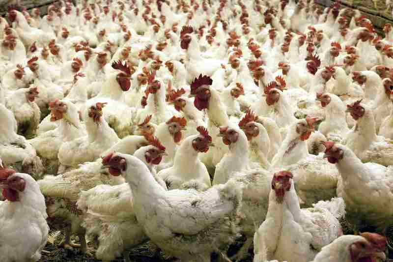

Poultry is the method of raising various domestic birds like chicken, turkey, emu, ducks, geese, etc. for their eggs or meat. This has been practiced in India for such a long time that it has become an indispensable part of the farming and agriculture system. Since the 1950s poultry farming in India has changed tremendously. From being an unorganized and non-scientific system it has transformed itself to a more systematic, planned, scientific, commercial and organized farming practice. From being a backyard farming practice it is now full-fledged techno-commercial industry.
Globally, India ranks third in the world in egg production and fifth in the world in chicken meat production. Although the production is mainly achieved through commercial means, the rural poultry sector also contributes significantly to the Indian poultry industry. It is looked upon as a reliable economic and nutritional source.

Poultry farming are of different types such as duck rearing, rearing chicken, quails, turkey, emu, broiler, etc. However the principles and practices underlying are the same. For a successful poultry management the checklist includes proper site selection, site building, chalking the rearing plan, proper knowledge of using the equipment, procuring the various quality inputs from different resources, managing the day to day poultry affairs, constructing the houses and managing the timely marketing.
Choosing Poultry Farm SiteThe farm site must be away from the chaos and hustle-bustle of the city. It should be calm and pollution free environment. The farm must have adequate, clean and fresh drinking water sources nearby. Also the site must be free of poultry enemies and predators like foxes and leopards. The site must be easily accessible from main roads. In other words, transportation must be easy and not very difficult. The local markets must also be easily accessible.
Housing for Poultry FarmingPoultry shelters are the next important factor after farm sites in poultry rearing. The shelters must be raised adequately to prevent the risk of flooding. It should be spacious enough to permit free movement and running of the birds. In addition the shelter must be adequately ventilated and protected from sunlight. It is advisable to construct the shelters in a south facing direction. In this way, the birds are not only protected from the harsh sunlight but also permit circulation of fresh, clean air. There should be adequate drainage facilities in the shelter. Also if there is more than one shelter then the distance between two of them must be at least 50 feet. This would ensure proper ventilation and non-accumulation of ammonia inside the shelters. The entrances in the shelter must be fastened properly. Also there should be fencing around the shelter to secure the birds. The shelter design however depends on the breed of poultry, type of production, etc.
Types of Poultry Farming in IndiaBroiler segment in poultry is one of the fastest growing segments in recent times. It is the tender, young meat of male or female chicken. It’s weight ranges from 40 grams to 1.5 Kg and it can be maximum six weeks old. India produces 2.47 million metric tonnes of broiler making it the fifth largest broiler producer in the world. This growth is mainly due to the interposition of the corporate sector that threw emphasis on scientific rearing of broilers. Owing to the considerable growth, farmers have access to high quality chicks, professional guidance, medicines and vaccines, sophisticated equipment, etc.
Layer poultry means raising birds specifically for egg-laying purposes. In other words, special hen species are reared for commercial egg production. They start laying eggs once they are 18 weeks old and go on laying eggs till they are 78 weeks of age. During this period they produce 1 Kg of eggs for every 2.25 Kg of food consumed. Globally India is the third largest producer of eggs in the world. As per statistics, the current egg production is far below the ICMR recommended 180 eggs per capita annually.
Country Chicken FarmingCountry chicken or free range chicken is rearing poultry breeds indigenous to India. In other words, they are local breed of chicken found in a particular geographical location. India is the fifth largest chicken producer of which commercial poultry breeds are a major harvest. However country chicken also makes significant contribution. The main advantage of country chicken is that the birds are comparatively more resistant to infections and have a better survival rate. They adapt to new surroundings easily. They have a good egg production capacity and the input cost is negligible.
Emu FarmingEmu is a versatile bird that survives in almost all climates worldwide. They were introduced along with ostriches in India. However owing to its versatility it has garnered a lot of importance. One of the main reasons behind this is that it neither dependent on the monsoons nor by the uncertain market trends. Emu meat is used for making food preparations while emu oil is of medical significance.
Duck FarmingDucks unlike other poultry birds have a difference in their growing habits and habitats. They are raised for their meat and eggs yet, they fall only partially under the poultry system. They are strong birds but they need water around them for mating and laying the eggs. They can feed on the agricultural waste produced at the farms. Hence they can be grown in the farms.
Disease Management in Poultry FarmingMore than 60% of the total diseases and pathogens in the world originate from animals- wild or domestic. Zoonotic pathogens are transmitted to humans via food or through direct contact between humans and animals. Diseases are the main threat to poultry farming. Farmers face severe losses due to spread of various poultry diseases. One of the best ways to prevent development and spread of diseases is to take good care of the birds. The shelters must be cleaned regularly. The water and food containers must be washed regularly. Precautions must be taken to not mix contaminated food with regular food. The birds must be regularly checked for development of disease symptoms. Vaccination schedules must be properly followed. If any infection is detected then the diseased bird must be immediately separated from other healthy birds to check the spread of infection.
Profitability in Poultry Farming in IndiaPoultry business in India is a profitable agribusiness owing to many reasons. One of the chief reasons is that unlike agriculture, this is not dependent on rain, sunlight or other weather factors. The investment required here is lower. Initially it can be started with a very small flock of birds and then built up progressively. Since it is not weather and geographical conditions dependent there is always a promise of yield and returns.
Profitability in Poultry Farming in IndiaPoultry farming in India is good way to start agriculture since it require less space. The birds are capable of increasing the soil fertility which is an important factor for cultivation. In addition, the poultry waste is useful for organic agriculture and has demand in market.
References: